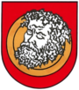
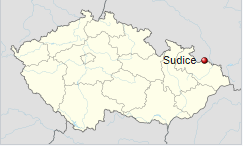

Zakladní Informace
| znak |
| ¨ |
| mapa |
|  |
Obec Sudice se nachází v okrese Opava v Moravskoslezském kraji. Žije zde 625 obyvatel. rozloha obce je zhruba 9,43 km² a nadmořská výška je 244 m n. m.
V obci se také nachází základní a mateřská škola (ZŠ a MŠ Sudice), také zde protéká potok, je zde fotbalové hřistě a také čtyři dětská hřiště. Stojí zde dva kostely, pomník tanku a další dva pomníky na památku padlých vojáků při druhé světové válce a také socha Ježíše Krista a park ve středu obce.
V obci bylo dosud postaveno 182 domů. Obec má jen jednu část.
Co se týče firem v obci je jeden obchod. Před rokem zde sídlily dvě restarace, nyní zde není žádná. Je zde jedna pokrývačřská firma, jedna stolařská firma, jedna zamečnická firma a jedna interierní firma.
Je zde sportovní klub (TJ sokol Sudice), tento klub každoročně pořádá sportovní slavnost a také hraje fotbal v III.třída sk.A muži.
Každoročně se v obci pořádá několik slavností:- Sportovní den: Fotbal, občerstvení tombola
- Dětský den: Atrakce pro děti, občerstvení, dětská vystoupení, tombola
- Odpust: Pouťové Atrakce, občerstvení, vystoupení různých skupin
- Stavění máje: Postavení májky, občerstvení